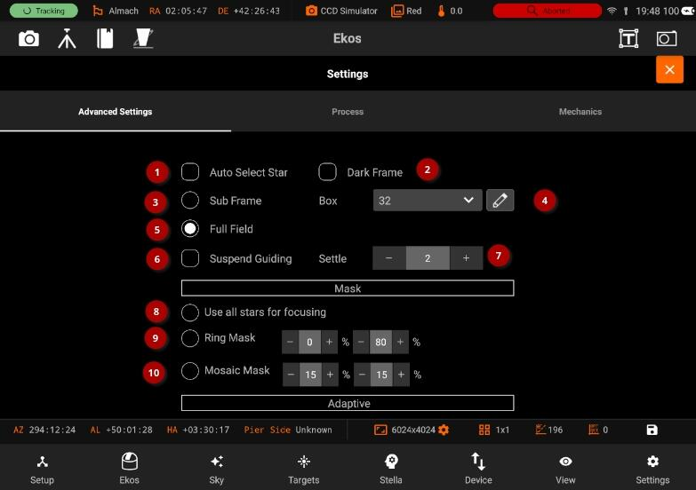
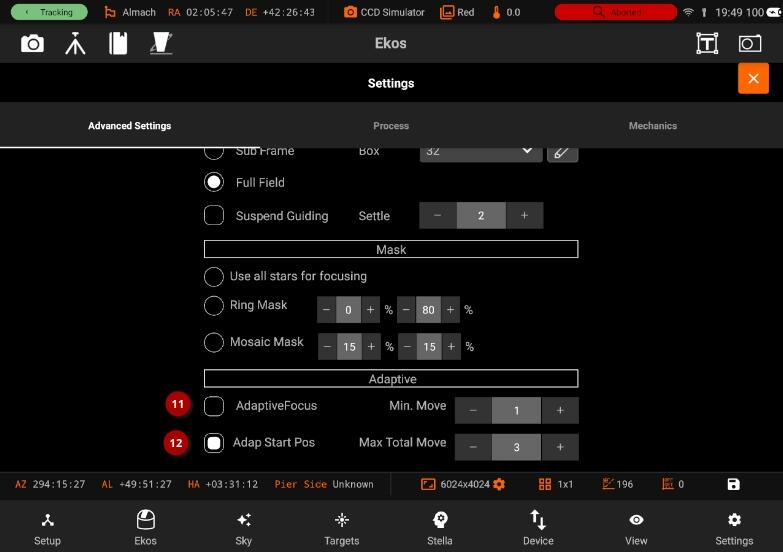

Advanced
Advanced setting

The Settings page has the following options:
- Auto Select Star: Automatically detect and select best star for guiding in the image.
- Dark Frame: Check this option to capture a dark frame if necessary and perform dark-frame subtraction. This option can be useful in noisy images.
- Subframe: Subframe around the focus star during the autofocus procedure. Enabling subframing can significantly speed up the focus process.
- Box: Sets the box size used to enclose the focus star. Increase if you have very large stars.
- Full field: Measure average HFR from all stars combined in a full frame. This method defaults to the Centroid detection, but can use SEP detection too. Its performance decreases as the number of stars increases.
- Suspend Guiding: Suspend Guiding while autofocus in progress. If the focus process can disrupt the guide star (e.g. when using Integrated Guide Port IGP whereas the guider is physically attached to the primary CCD), then it is recommended to enable this option. When using Off-Axis guider, then this option is not necessary.
- Settle: Sets the amount of seconds to wait before resuming guiding.
- All stars are used for focusing.
- During Full Field focusing, this controls the size of an Annulus centred at the middle of the sensor to include for processing. Set inner % to zero to include the centre of the sensor and set outer % to 100 to include the outer edges of the sensor.
- Aberration inspector style mask with a 3x3 mosaic formed with tiles from the center, the corners and the edges.
- Enable Adaptive Focus between subframes.This is an experimental feature.
- Min move: The minimum size of an adaptive focus change that will be sent to the focuser.

- Adapt the Autofocus start position based on filter and the Adaptive Focus settings. This is an experimental feature.
- The maximum total Adaptive focuser movement between Autofocus runs. If this value is hit, adaptive focusing is suspended. The purpose of this control is to handle runaway adaptive focusing.
- Annulus: During full field focusing, stars which are inside this percentage of the frame are filtered out of HFR calculation (default 0%). Detection algorithms may also have an inherent filter.